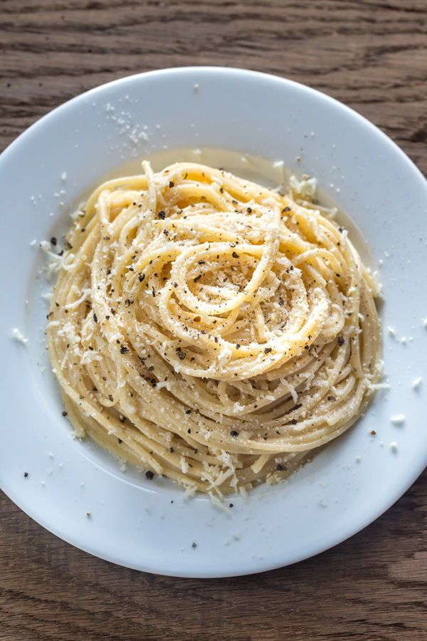

"Fideos chanchos" recipe!

Description
in this recipe we will show you how to make a plate that is called Fideos chanchos, it gets its name from the popular chef Ramiro Reyna.
its a pretty easy to make, with low effort and great reward
ingredients
- 200g spaghetti noodles
- 50g cheese(one that you like)
- 20g unsalted butter
- 1.1L of water
- 20g of salt
Steps
- first put the water in a cooking pot and heat it till the water voils
- put the salt into the pot
- add the spaghettis (dont break them!), then, gently move them arround the pot, not letting them stick to each other
- cook for 7 to 9 minutes at ease, stiring them every 2 minutes
- once the spaghettis are cooked, pur them into a strainer and shake them to remove the exces of watter
- plate up and add the butter, stir the noodles once again
- grate the cheese on the plate
- enjoy!